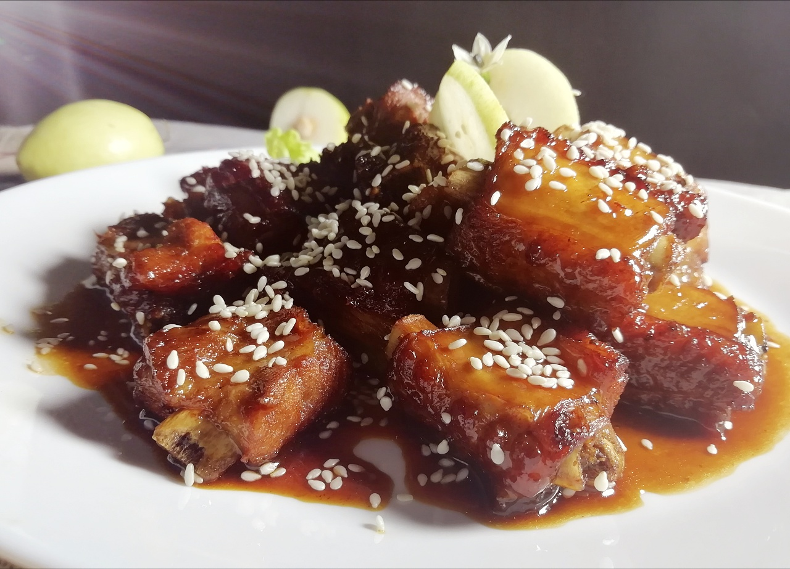

My favorite food
Speaking of sweet and sour ribs, I remember the first time I ate sweet and sour ribs in a restaurant: I celebrated my birthday that day, and my good friend Bing Bing celebrated with me. Mom took us to the "Origin Kitchen". As soon as the waitress aunt brought the dish to the table, it was snatched up by both of us, and we said as we ate: "One more plate, one more plate!" "Haha... Two freeloaders! Seeing that I love sweet and sour ribs so much, my mother decided to learn to make them. She looked up information on the computer, and then experimented with the above method, but she didn't expect that her mother made it even better than what she made in the restaurant! Since then, this delicious dish has been my family's "home cooking". You see, my mom is great! Mom often makes my favorite sweet and sour ribs, for a long time, I will memorize the secret of making ribs, that is, "one wine, two vinegar, three sugars, four sauces and five waters". Do you want to know exactly how this dish is cooked? It just so happened that today my mother bought ribs again, you can make them with me.method
The steps are as follows:
One: Wash the purchased ribs (preferably small ribs) with clean water and put them on a plate, and mix the seasoning prepared in advance into juice according to the ratio of "one wine, two vinegars, three sugars, four sauces and five waters". [One part cooking wine, two parts white vinegar, three parts white sugar, four parts soy sauce (light soy sauce, old soy sauce is too dark) five parts cold water. The amount of sauce depends on the amount of ribs.Two: Add a little water to a small pot, and when the water is boiling, put the ribs into the pot and blanch them, and then fish them out to cool. Three: put a lot of oil in the wok, put the ribs into the oil pan when the oil is hot, fry it slightly, the oil temperature is not too high, the frying time is not too long, the pork ribs are hard for a long time and it is not delicious, fry it and take it out and put it on a plate. Four: Leave a little base oil in the wok, put the fried ribs in it and stir-fry a few times, pour the adjusted juice into the pot, and simmer over low heat after turning on high heat, until the juice is sticky.
When a plate of sweet and sour ribs is placed in front of you, your saliva will surely come out. When you make such a plate of sweet and sour ribs according to my method, you must let me taste your craft.
Sweet and sour ribs nutritional value
Sugar can benefit the spleen and stomach and nourish the skin. Acid into the liver and gallbladder, nourish tendons and ligaments. Sugar has the effects of moisturizing the lungs, nourishing yin, flavoring, removing bad breath, detoxifying salt and halogen, relieving cough, and benefiting the lungs, and soothing liver qi. Proper consumption can also help improve the body's absorption of calcium. All sweet and sour dishes have the benefits of nourishing the liver and spleen meridians. In addition to protein, fat and vitamins, pork ribs also contain a large amount of calcium phosphate, collagen, bone mucin and other nutrients. After the ribs are stewed, most of their soluble calcium, phosphorus, sodium, potassium, etc. spill into the soup. Calcium, magnesium are easy to be analyzed under acidic conditions, and calcium acetate is produced after acetic acid, which can be better absorbed and utilized by the human body, so sweet and sour ribs can improve the nutrient absorption rate of boiled ribs, which is very suitable for calcium supplementation for the elderly and children.
The vinegar can remove fishy odor and protect its nutrients.
- 1. It can reduce the alcohol concentration and play a role in sobering.
- 2. It also has the effect of softening bone and promoting calcium absorption.
- 3. It can be appetizing, help digestion and absorption, make appetite strong, and eliminate food accumulation.
- 4. It has good bacteriostatic and bactericidal effect, and can effectively prevent intestinal diseases, influenza and respiratory diseases.
- 5. It can soften blood vessels, reduce cholesterol, and is a good remedy for cardiovascular and cerebrovascular patients such as hypertension.
- 6. It can play a good protective role on the skin and hair.
- 7. It can eliminate fatigue and promote sleep.
- 8. Proper consumption also helps to improve the body's absorption of calcium.
Sweet and sour ribs
